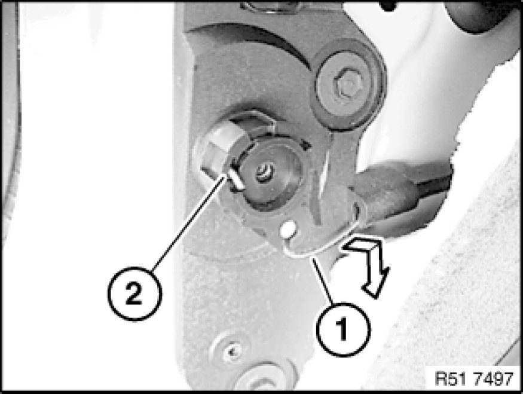
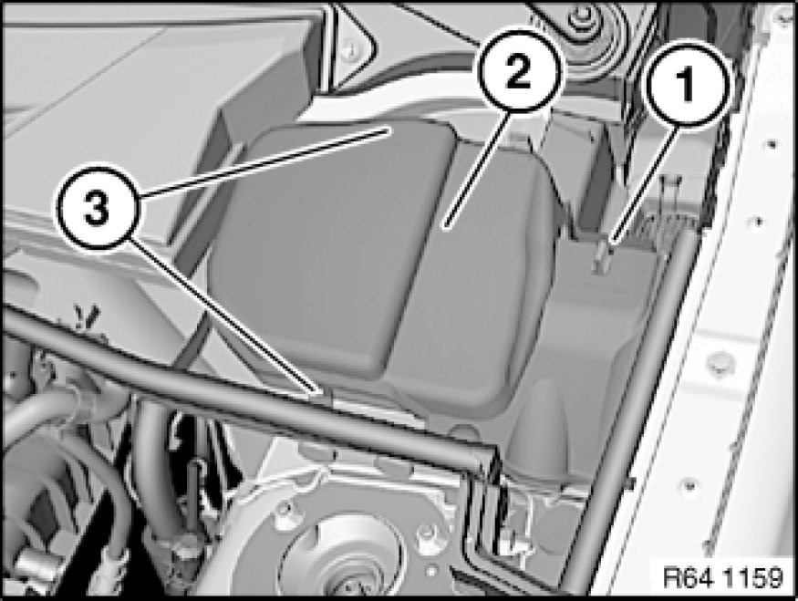
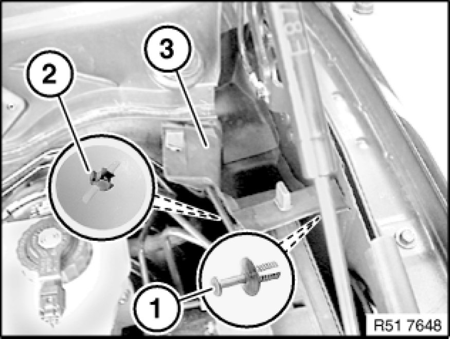
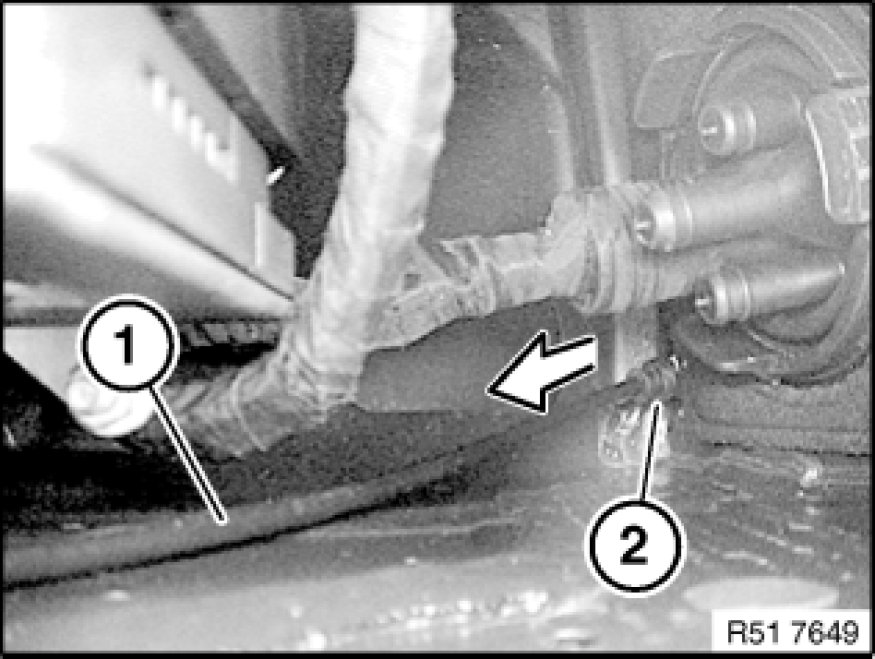
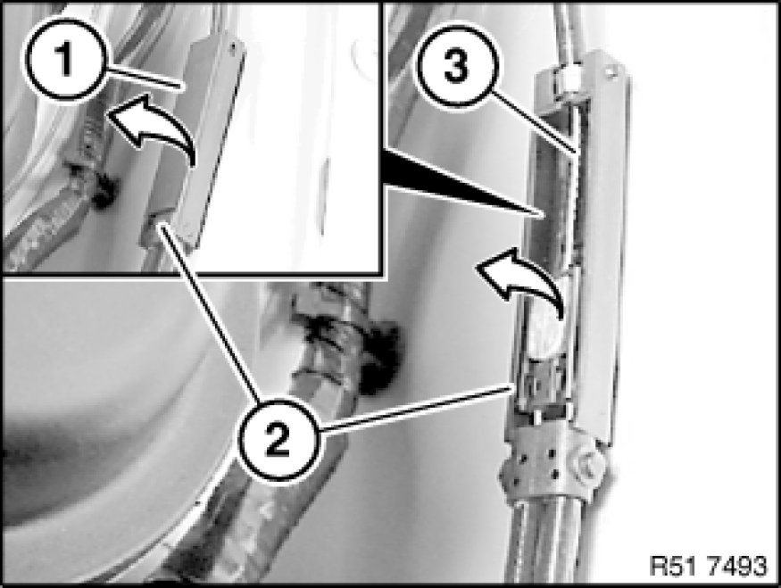

51 23 213 Removing and Installing/Replacing Cable for Hood/Bonnet Lock (to Interior)
51 23 213 - Removing and installing/replacing cable for hood/bonnet lock (to interior)

Necessary preliminary tasks:
- Remove footwell side trim panel [1][2]51 43 070 Removing and Installing/Replacing Side Trim Panel, Footwell, on A-pillar, Left

Disengage Bowden cable (1) from release lever (2) and feed out in direction of arrow.

Release holder (1).
Release catches (3) and remove right cover (2).

Release expander rivet (1) and nut (2).
Feed out water channel (3) towards top.

Feed out Bowden cable (1) in direction of engine compartment.
Installation:
Lay Bowden cable (1) without kinks.
Important!
Grommet (2) must not be damaged.
Check that grommet (2) is correctly seated (water ingress).

Lever out cover (1) from coupler (2) in direction of arrow.
Lever out Bowden cable (3) in direction of arrow and remove.